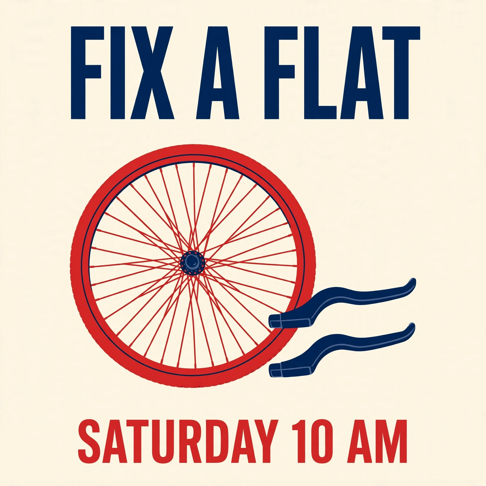
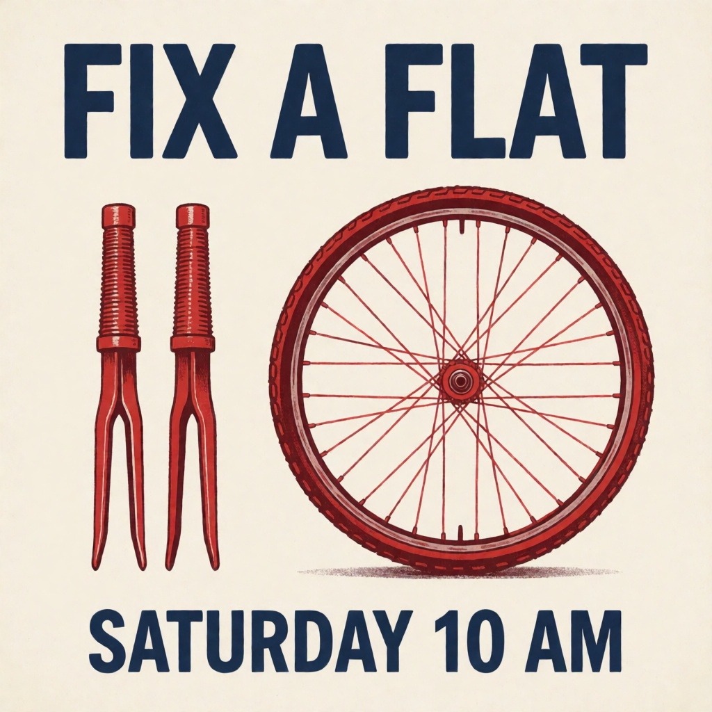
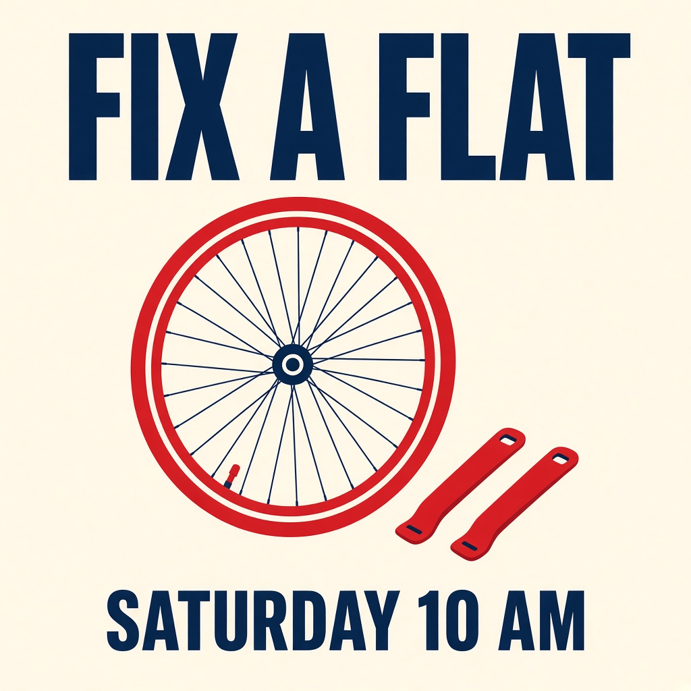
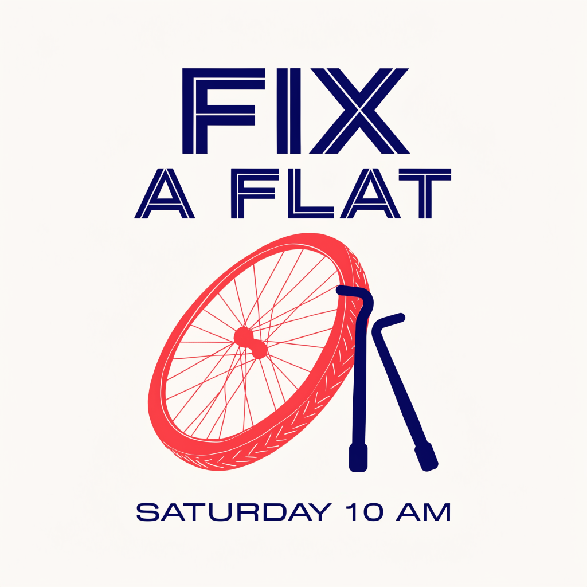
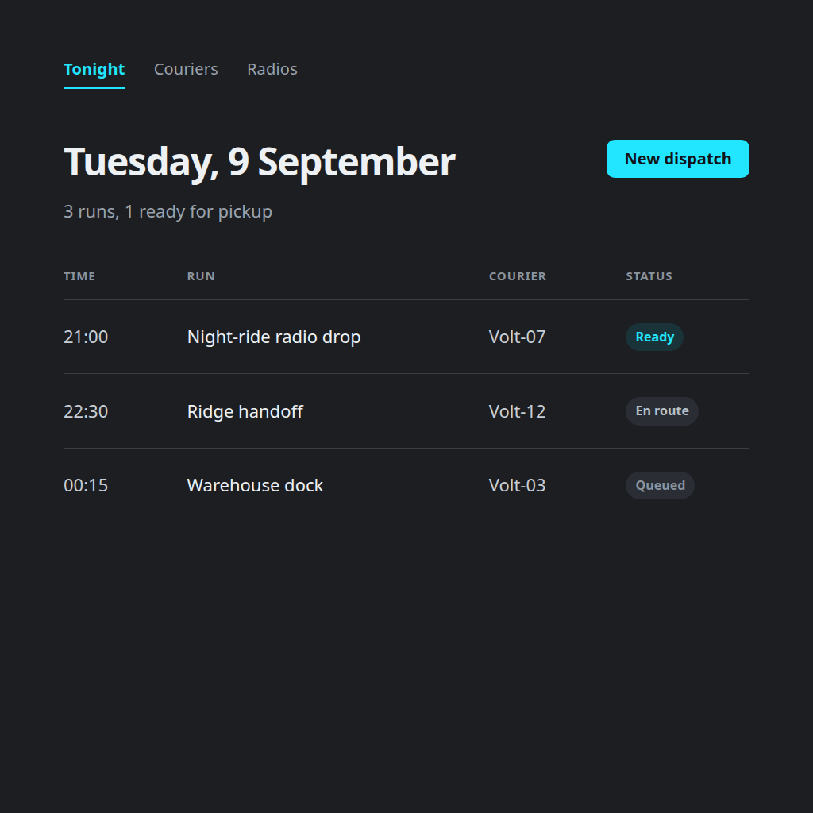

See what a workflow produces.
Actual first-party runs with the input brief, selected models and review notes. Open a sample graph to reuse it. Viewing these saved outputs is free; generating your own uses your NanoGPT balance.
Image and text samples were inspected; video notes describe sampled frames. Audio review is labeled separately. These examples show observed results, including limitations, rather than guaranteeing the next generation.
Want to remix one? The examples how-to walks through each workflow: which inputs to edit, what to inspect, and the reported cost.
Plain-language editor
The edited notice preserves the date, $15 fee, 14-day credit, opening hours, existing bookings and contact address. It removes promotional filler. This checks the supplied notice; it does not detect authorship.
Starting 8 September, you can book a 30-minute bicycle check online for $15. The fee is credited toward any repair completed within 14 days. Appointments are available Tuesday through Saturday, 9 am to 5 pm. Existing bookings are unchanged. To reschedule, email repairs@example.com at least 24 hours before your appointment.
Input brief and source images
Your draft
We are thrilled to announce a game-changing improvement to the repair booking experience. Starting 8 September, customers can book a 30-minute bicycle check online for $15. The fee is credited toward any repair completed within 14 days. Appointments are available Tuesday through Saturday, 9 am to 5 pm. Existing bookings are unchanged. To reschedule, email repairs@example.com at least 24 hours before your appointment. This seamless new offering empowers you to unlock the full potential of your bicycle.
Open workflow ↗How to use thisDownload workflowOriginal sampled graphExplore MCP tools ↗
Favicon concept
A crisp navy-and-gold symbol with a readable silhouette. This is a raster concept; inspect it at small sizes and export the icon formats your app needs.
{kind=link}
Input brief and source images
Brand
Lumen — pocket weather radio. One lighthouse beam as a chevron. Deep navy field, single warm-gold mark. No letters.
Open workflow ↗How to use thisDownload workflowOriginal sampled graphExplore MCP tools ↗
Product concept still
One coherent amber bottle, black pump and plausible light on limestone. The result is square and depicts a fictional product; it is not a photograph of merchandise.
{kind=link}
Input brief and source images
Product
One unbranded amber glass hand-soap bottle with a matte black pump, resting upright on a pale limestone counter. No label, packaging or accessories.
Light
large softbox left, gentle shadow, neutral backdrop
Open workflow ↗How to use thisDownload workflowOriginal sampled graphExplore MCP tools ↗
Cinematic character still
A coherent chest-up hero still of a fictional motorcycle courier in a night alley under magenta and cyan key-art, red helmet under one arm. This is generated key-art, not a photograph of a real person.
{kind=link}
Input brief and source images
Person
A fictional motorcycle courier in his mid-20s, East Asian appearance, neat black undercut slicked back, sharp jaw, dark eyes, a confident almost-smile, unobstructed face and mouth. Small black hoop earring. Black leather jacket with white racing stripes and a small red accent over a plain white tee, glossy red helmet tucked under one arm. Rain-slicked Tokyo alley at night, neon reflecting on wet pavement. One person only. No text, logos or extra people.
Light
hard magenta rim + cyan bounce / navy void
Frame
chest-up hero key-art, subject fills the frame, shallow depth of field
Open workflow ↗How to use thisDownload workflowOriginal sampled graphExplore MCP tools ↗
Clean a product photo
The supplied generated bottle becomes a clean catalog-style image. Its recognizable shape and materials remain. Compare real product markings and proportions before using a generated edit commercially.
{kind=link}
Input brief and source images

Edit request
Prepare this product photo for a catalog. Preserve the exact product shape, color, materials, markings and visible text. Replace the background with clean warm-white seamless paper, remove unrelated background clutter, and use soft even studio light with a subtle natural contact shadow. Keep the whole product visible and the original camera angle. Add no accessories, props, labels or branding.
Open workflow ↗How to use thisDownload workflowOriginal sampled graphExplore MCP tools ↗
Place a product in a setting
The supplied bottle appears beside the mug and notebook from the second reference, with plausible lighting and contact. Generated composites still need checks for exact product fidelity.
{kind=link}
Input brief and source images

Placement brief
Place the product from image 1 naturally into the setting from image 2. Preserve the product shape, proportions, materials, color and visible markings. Preserve the setting layout and camera perspective. Place one instance on a plausible supporting surface; match scale, lighting and contact shadows. Remove neither structural elements nor existing furniture. Add no extra products, people, text or decorative props.
Open workflow ↗How to use thisDownload workflowOriginal sampled graphExplore MCP tools ↗
Compare image models
All four rendered the requested heading and footer. Grok drew recognizable tire levers; Muse, Krea and Recraft produced less accurate tool shapes. One prompt demonstrates why task-specific checks matter; it is not a general ranking. The sample was generated on 5 September. Open workflow uses the current model ID after a provider-name migration; the original sampled graph is retained below.
{kind=link}

{kind=link}

{kind=link}

{kind=link}

Input brief and source images
Shared test brief
Create a square poster for a bicycle repair workshop. Exact heading: FIX A FLAT. Exact footer: SATURDAY 10 AM. A single red bicycle wheel rests beside two tire levers on a cream background. Flat editorial illustration, navy and red palette, clear hierarchy, large readable type. No extra words or objects.
Open workflow ↗How to use thisDownload workflowOriginal sampled graphExplore MCP tools ↗
Travel postcard illustration
A coherent illustrated night market with a clear food-stall focal point. This is an illustration, not a documentary image or a print-ready layout with typeset copy.
{kind=link}
Input brief and source images
Place
Raohe night market, Taipei — grilled squid smoke hanging in the lane, red lanterns, wet asphalt, one stall still roaring
Vibe
warm illustrated travel print
Open workflow ↗How to use thisDownload workflowOriginal sampled graphExplore MCP tools ↗
Animate a still
Five sampled frames show the mug, notebook and desk staying stable while steam changes. This is a five-second motion concept; a seamless loop is not promised. The sample was generated on 5 September. Open workflow uses the current model ID after a provider-name migration; the original sampled graph is retained below.
Input brief and source images
Still brief
A ceramic mug of hot tea on an oak desk beside a closed notebook. Soft morning window light from the left, plain warm-gray wall, close three-quarter view, entire mug visible, clear handle silhouette, faint steam above the tea, no text or logos.
Motion brief
Locked camera for five seconds. A thin wisp of steam rises slowly from the tea and curls gently in the window light. The mug, desk and notebook remain completely still. Preserve their shape and placement; no cuts, new objects or camera motion.
Open workflow ↗How to use thisDownload workflowOriginal sampled graphExplore MCP tools ↗
Product motion concept
Five sampled frames show a coherent camera orbit around a stable bottle and plinth. This is a 360p draft of an earlier water-bottle concept. The live Examples first-click is now a chrome motorcycle helmet under hard rim light.
Input brief and source images
Object
One unbranded matte sage-green insulated water bottle with a black screw cap on a stationary pale-gray studio plinth, neutral background, softbox lighting.
Move
camera makes a slow quarter-orbit; object stays still
Open workflow ↗How to use thisDownload workflowOriginal sampled graphExplore MCP tools ↗
UI screen concept
The final run preserves the requested navigation, date, three appointment rows, names, statuses and totals without invented extra sections. This is a design-review image, not working UI.
{kind=link}

Input brief and source images
Screen brief
Repair shop dashboard, desktop screenshot. Navigation: Today, Repairs, Customers. Header: Tuesday, 8 September. Main table: 09:00 Brake adjustment | Maya Chen | Ready; 10:30 Flat tire | Sam Ortiz | In progress; 14:00 Tune-up | Alex Kim | Booked. Primary button: New appointment. Summary: 3 appointments, 1 ready for pickup.
Visual style
Warm white background, charcoal text, gray dividers, forest-green primary button. Simple sans-serif, readable table rows, generous spacing. Flat front-facing screenshot, no browser or device frame, annotations, glow, gradients or unrelated charts. Preserve supplied labels and values. Show only specified content. No extra sections, metrics, rows or invented brand names.
Open workflow ↗How to use thisDownload workflowOriginal sampled graphExplore MCP tools ↗
Original closing-credits song
A 170-second generated song. Gemini 3.8 Flash audio review identified clear vocals, gentle acoustic guitar and a chorus matching the supplied lyrics, with no obvious glitches reported. This is a model-assisted listening assessment, not a human listening sign-off. The separate audio-review call reported $0.00627.
[Verse 1] The bell rings soft, the day is done, A squeaky wheel rolls slowly in. I grab the wrench my neighbor lent, And tighten up the world again. [Chorus] One small fix, one small light, Left burning for the last in line. A little mending, a little time, And the hard day turns out fine. [Verse 2] A cracked old clock, a wobbly chair, Somebody's treasure, worn with care. I wipe my hands, I sweep the floor, And leave the lamp beside the door. [Chorus] One small fix, one small light, Left burning for the last in line. A little mending, a little time, And the hard day turns out fine. [Outro] The wheel spins quiet now, and true, Tomorrow's waiting — me and you. One small fix, one small light, Goodnight.
Input brief and source images
Song Instructions
Write a short original song for the closing credits of a cozy repair-shop game. Theme: fixing a small thing makes a hard day better. Concrete details: a squeaky wheel, a borrowed wrench, a light left on for the last customer. Warm, understated and hopeful. No brand names.
Musical style
Gentle acoustic folk, relaxed mid-tempo, warm solo vocal, fingerpicked guitar, soft brushed percussion. Clear words and a memorable chorus; no artist imitation.
Open workflow ↗How to use thisDownload workflowOriginal sampled graphExplore MCP tools ↗
Spoken workshop introduction
Sampled frames retain the fictional presenter with coherent mouth and head movements. The male appearance now matches the selected male voice. Check precise lip-sync timing in playback. Generation took several minutes; an earlier attempt exceeded a four-minute timeout. Gemini 3.8 Flash transcribed the intended script and reported clear, calm male speech. This audio assessment cost a reported $0.00164 and is model-assisted. The sample was generated on 5 September. Open workflow uses the current model ID after a provider-name migration; the original sampled graph is retained below.
Input brief and source images
Presenter look
A fictional friendly male museum guide in his thirties, wearing a plain navy shirt, shoulders-up front-facing portrait. Relaxed neutral expression, unobstructed face and mouth, eyes toward camera, soft even light, simple warm-gray background. No glasses, hats, text or logos.
Spoken script
Welcome to the workshop. Start with the blue tray on your table. Inside you will find paper, a pencil, and the parts for your first model.
Delivery
Natural calm delivery, subtle blinks and small head movements. Keep the face and mouth visible, eyes toward the camera, body position stable. Locked camera, no cuts or extra people.
Open workflow ↗How to use thisDownload workflowOriginal sampled graphExplore MCP tools ↗